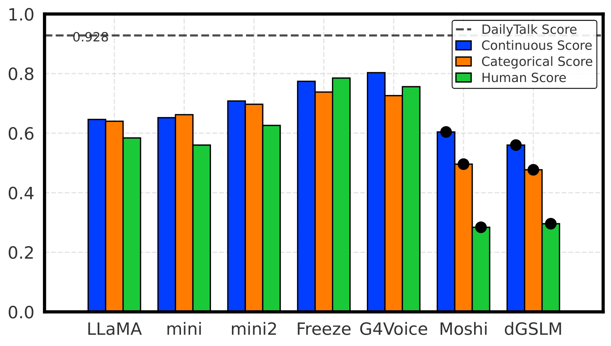
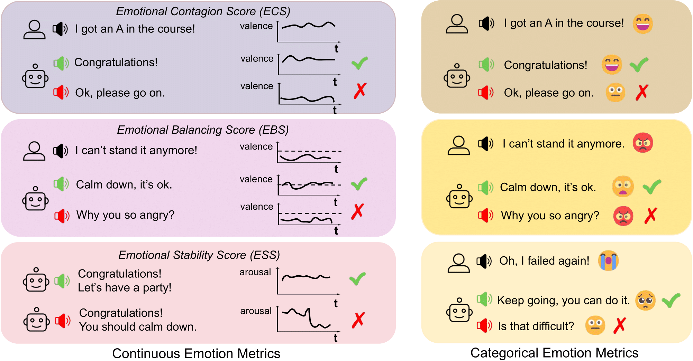
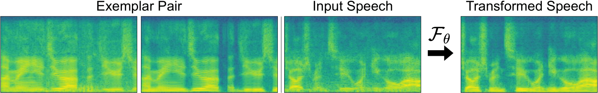

Berkeley AI Research (BAIR), CA, U.S.
Research Assistant • Spring 2024 - Spring 2026
With: Gopala Anumanchipalli
Kan Jen Cheng 鄭堪任
I am an incoming PhD student in Computer Science at the University of Maryland, College Park (Fall 2026), advised by Professor Ming C. Lin. Previously, I received my bachelor's degree from UC Berkeley, where I worked on audio-visual research in Berkeley Speech Group (BAIR), advised by Professor Gopala Anumanchipalli.
My research interests lie at the intersection of audio-visual learning, multimodal perception, and generative modeling. While recent advancements in LLMs have mastered language, I view text as a reduction of reality. Instead, I aim to build multimodal systems that perceive the world through the synergy of sight and sound, grounded in spatial awareness and physical understanding.
If you would like to discuss my research or potential collaborations, feel free to contact me. I'm always open to connect and collaborate.
My research is guided by the belief that multimodal synergy must be grounded in an understanding of the physical world. Correlations between sight and sound are valuable, but perception also requires understanding geometry, dynamics, and material interactions. My research focuses on spatial and physical learning to develop world models that capture these relationships. I work toward digital twins that represent both the appearance of an environment and its underlying physical behavior. By grounding audio-visual generation in these principles, I seek to enable agents to reason about the world through a unified sensory experience.


A holistic benchmark for assessing emotional coherence in spoken dialogue systems through continuous, categorical, and perceptual metrics.

A latent diffusion, exemplar-based analogy (In-Context Learning) model for audio texture manipulation, which refers to editing the overall perceptual quality of a sound and its interaction with various sound sources.
Berkeley AI Research (BAIR), CA, U.S.
Research Assistant • Spring 2024 - Spring 2026
With: Gopala Anumanchipalli
Fall 2026 - Present
University of Maryland, College Park, MD, U.S.
Ph.D. in Computer Science

Fall 2020, Spring 2022 - Fall 2023
University of California, Berkeley, CA, U.S.
B.A. in Computer Science

Outside research, my photography and short prose grew out of what I read. I am drawn to the finely observed lives of 樋口一葉, the silences of 川端康成, the confessional vulnerability of 太宰治, and the lyrical meditations of 白落梅 and 簡媜. Though their voices differ, each attends to what lingers after an ordinary moment has passed. I hear a related sensibility in Uru's lyrics, where feeling gathers around what cannot be said directly. Together, these voices taught me to notice the emotional afterlife of small moments—to let an inch of light and shadow hold, for a while, what human life leaves unsaid. I explore that sensibility in a small visual-literary journal here.